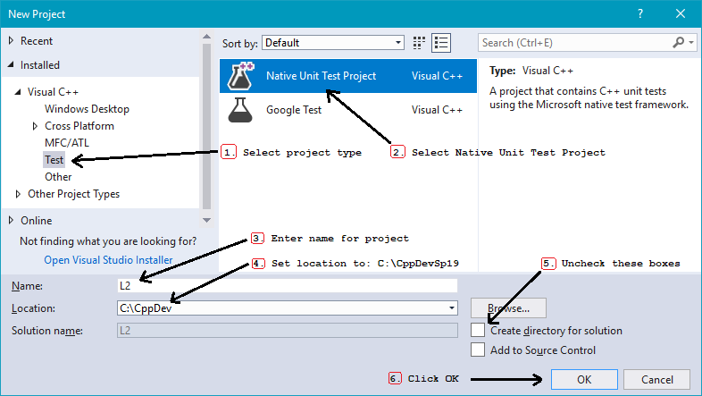

Creating a New VS2017 Project for Unit Testing
From Windows, start up Microsoft Visual Studio
In Visual Studio - Choose File | New | Project ...
Do the following six steps in the New Project dialog:
